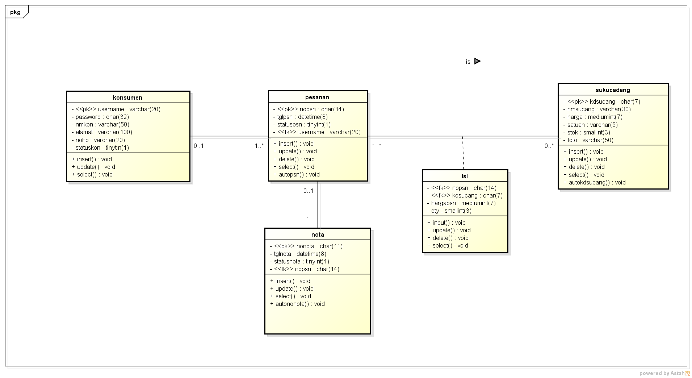

Hasil Menyadur :
1. Kelas Pengganti untuk pertemuan 7, tentang sequence diagram. Mulai pertemuan 9, sudah mulai presentasi kelompok.
2. Class diagram, untuk menggambarkan hubungan antar tabel (class). Class diagram representasi lain dari ERD dan LRS.
3. namaClass usahakan tidak mengandung spasi.
4. Beda ERD dan ClassDiagram. Kalau ERD untuk menandakan primarykey nya digaris bawah, sedangkan classdiagram dengan streotype.
5. Method pada class diagram akan lebih terlihat saat di sequence, method diclassdiagram bisa saja hanya sementara.
5. Relasi pada ERD menjadi assosiation class pada class diagram.
6. LRS dan Class Diagram perbedaan terletak di spek basis datanya.
Latihan membuat classdiagram
